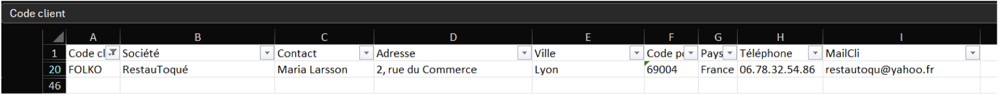
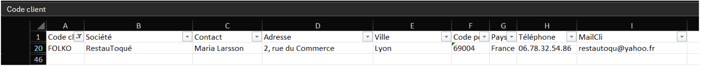

Mission 1 : Analyse et fiabilisation de la base de données KDou
1. Le contexte
Pour cette première mission, nous avons travaillé sur la base de données KDou fournie au format Microsoft Excel. Elle contient toutes les informations nécessaires à l’entreprise : fournisseurs, produits, catégories, clients, commandes et détails de commandes.
L’objectif était de comprendre l’organisation de la base, d’identifier les relations entre les tables et de détecter les erreurs ou incohérences.

2. Étude des données
a. Analyse des tables et des relations
Nous avons utilisé Microsoft Excel pour visualiser les relations et mieux comprendre la structure de la base. Les clés primaires et étrangères jouent un rôle essentiel pour assurer la cohérence entre les tables. Par exemple :
NoFourrelie les produits à leur fournisseur.CodeCategassocie chaque produit à sa catégorie.
Chaque table a une fonction spécifique et elles sont toutes liées entre elles :
- Les fournisseurs permettent de retrouver l’origine des produits.
- La table Produits centralise les informations sur le stock et le coût.
- La table Catégories classe les produits par famille.
- Les tables Commande et DétailCommande relient les clients aux achats réalisés.
b. Détection des anomalies
Plusieurs anomalies ont été relevées :
- Erreurs de saisie : par exemple la ville « Lille » écrite de deux façons différentes (« Lille » et « Lillle »), ce qui peut fausser les recherches et statistiques.
- Violations de clé étrangère : par exemple un client
FOLK0présent dans certaines commandes mais absent de la table Clientèle, ou des produits liés à une catégorie inexistante.

 

3. Solutions proposées
- Ajouter des règles de validation automatique pour éviter les doublons ou les saisies incorrectes.
- Créer des tables de référence (liste unique de pays, de catégories…) pour uniformiser les données.
- Mettre en place des contraintes de référence strictes entre les tables afin d’éviter les incohérences (commandes sans client valide, produits sans catégorie).
4. Conclusion
Cette mission nous a permis de mieux comprendre la structure d’une base de données relationnelle et l’importance de la fiabilisation des données.
L’analyse de la base KDou a révélé plusieurs points d’amélioration essentiels pour assurer la cohérence des informations et optimiser la logistique et les analyses commerciales de l’entreprise.